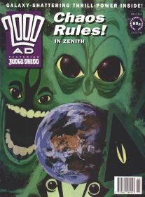
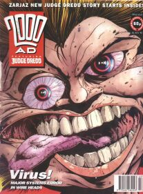
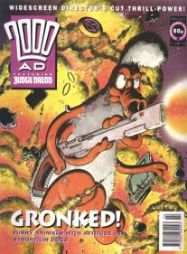
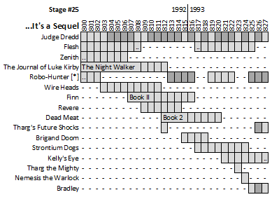

|  |  |  |
| Prog 805 by Steve Yeowell | Prog 810 by Mike Hadley | Prog 817 by Nigel Dobbyn |
Pretty crazy, but here's a twenty-eight prog span with just one new story (Wire Heads): it's sequels and spin-offs a go-go with the prog 800 launch. With the launch progs come three Micro-Guides (small cover-mounted pamphlets): the Series Index, the Judge Dredd Index and the Collector's Index. They are but nothing next to the modern might of Barney! (But it was all we had back then.)
Next door, the Megazine introduces robot Judges for the first time in the superlative and far-reaching Mechanismo.
Judge Dredd
Normally the mega-epics spin off some denouement tales that echo at least some of the aftermath of whatever the disaster was (Block War after The Judge Child, Meka-City after the Apocalypse War), but Judgement Day fades away into The Marshal (where a masked Cursed Earth vigilante out-does the Gila Munja in going toe to toe with the Judges). Innocents Abroad has Judge Joyce as the fish out of water in the Big Meg. The Magic Mellow Out sees Dredd affected by a hallucinogen. Raider tells of an ex-Judge turned vigilante. And P.J. shows up again for P.J. & The Mock-Choc Factory. It's not a hugely inspiring era of Dredd: post mega-epic without the maestro on script duties.
Expect more of this sort of thing in the next stage...
Flesh: The Legend of Shamana
A follow-up to Book II of Flesh (1979) didn't seem to be on the cards, when up popped this self-contained tale a mere thirteen years later. An inmate in a harsh prehistoric penal colony escapes the compound with her baby daughter, but is eaten by a dinosaur. (Out of the penal colony, into the jaws of a massive carnivorous reptile.) A multi-species gang of dinosaurs then raise that baby as their own: that baby is ... Shakara Shakira Shamana! I don't recall the moral of the story, but the message seems clear: don't mess with dino-lady and her usually hungry dino-gang! Shamana is later captured by men, who try to turn her into a nice little girl. It's a bit like A Clockwork Orange squeezed into a glass of Pygmalion, sat next to a copy of The Land That Time Forgot.
Flesh next rears it's razor-toothed maw in 1996 with Chronocide...
Zenith: Phase IV
The last half of this dark book sees the result of a Lloigor victory, as the earth (and humanity) suffers under their dark, god-like devices. The tale is told from the perspective of Peyne (or so it seems) as he magically grows younger, and yet the narration continues beyond his de-birth, leading to one of those The Usual Suspects moments providing a novel twist as a climax. Zenith has always had a dark edge, but this series takes us to the dark heart of super-humanity.
But hang on: when Ruby destroys the Chimera, the assumption is that she's just imagining she did that, under the influence of Peter St. John. At that moment, he has moved his enemies into the Chimera. But, inside the Chimera is a copy of everyone from the original universe: including the doomed Zenith and St. John. My question is - what happened to the copies of the baddies? Shouldn't there be two Rubies in there, for example? Or, was she in an alternate universe at that moment, so..?
Growing up with Zenith, and Watchmen: I always felt treated - like there was something in British comics (or British creators) and their attitude to super-heroism that beautifully undermined the shinier, more childlike approach of US comics. You need the idea of a superman in order to undermine it: but it demonstrated that comics could debate a topic at a deeper level. Is Zenith the best thing ever published in 2000 AD? In your top three?
Mostly, this is it for Zenith, although there's a brief follow-up in the year 2000: in the oddly named festive Prog 2001 (actually prog 1222.5)...
The Journal of Luke Kirby: The Night Walker
Luke's getting on well at school until a weird tramp shows up and starts winking at him and persuading him to meet up in secluded thickets late at night. That's all before the villains turn up. It's a bit like (tonally) Sapphire & Steel meets (visually) Nosferatu. (Well worth a read if you can track it down: one of the strong pillars holding up the prog during this era.)
Kirby returns next in the 1994 Yearbook...
Robo-Hunter(*) [*REBOOT]
We get the final three episodes of Return to Verdus, in which an invincible but murderous Cutie, who can fly now (and always presents as a blonde babe in a red swimsuit), is ripped apart by an invincibility-defying cyborg in a comfy sweater, who earlier seemed to have been murdered by being impaled with a golf club (by a gay insectoid S&M fashionista). Pseudo-Sam, who's just along for the ride, gets teleported back to Earth (in the nude) as Verdus is nuked.
In Ace of Slades, suddenly all of the supporting characters are British, like a Cockney Pope and (oddly) The Fat Slags from Viz: even though this tale is usually set in the US. Pseudo-Sam meets up with a bunch of alternate reality Sams, one of whom is an evil cyborg. Oh, and it's also got The Watcher from Marvel (although this stolen version is called The Voyeur). You don't have to read to the end: it's a Millar script so the unstoppable, invincible, muscle-bound, heartless, murderous foe will get destroyed somehow on the second to last page (after a bunch of stuff gets ruined). And Hoagy's in one frame making tea, even though he died in Escape from Bisleyland.
In Serial Stunners, Sam is kidnapped by a gang of weird war robots, and then he kills them all, but he does it in drag. Lastly, there's Keith the Killer Robot, in which a killer robot (named Keith) kills. Stogie shows up in the second to last frame, as if he's been there all along.
We're not done yet with Pseudo-Sam, and get more next in the 1994 Yearbook...
Wire Heads
Cyberpunk data wars! Kind of ahead of it's time (and yet still suffering from early cliches): this has the Internet as V.R. immersion (Paraspace), with monsterous virus creatures being zapped by in-system operatives. A dense plot full of Basil Exposition techno-babble serves to alienate the audience and turns this into a tricky to recall curio.
Returns (for financial, corporate reasons, according to ... everyone) in 1995 with sequel series paraSITES...
Finn: Book II
Back in Book I, Finn took out a bunch of super-powered accountants with skin conditions and aquatic fetishes. This time, he's levelled up to provoking an evil space god (with an aquatic fetish). Those accountants are still around, though: firing people by invoking (non-spontaneous) human combustion. And Finn can crush cell-phones with his bare hands, which is a bit odd. There's a scene where Finn is locked in a flooding cell, but then his buddy pops the door open (none of the water escapes), gives him everything he needs to escape his future predicaments, then closes the door again (despite all of the water).
Killing the evil god-being that is your ultimate enemy might seem like a neat stopping point, but this returns in 1995...
Revere: Written in Water
In Book I, Revere was the witch-boy, battling against totalitarian forces using magical powers and sharp things: but then he went on a serious trip involving bizarre god-beings. This time around, his family (which includes his mum as a floating head capable of doing a great flamethrower impersonation) are attacked by the soldiers, and Revere finds some time to go on a hot date before seeking vengeance on the thugs. I'm not sure what the deal is with evil demon-folk stealing his girlfriend, but maybe that'll get sewn up next time (assuming he isn't dead, because he jumps off a building at the end).
Book III will, perhaps, provide a satisfactory climax and leaps our way later in 1993...
Dead Meat: [Book 2]
There's a prelude episode that provides an explanatory timeline of how we went from where we are now to a future of a flooded London and a totalitarian vegetarian state with a sentient, anthropomorphic Ram that can head butt air liners into scrap. Anyway, this paints meat eaters as evil villains, and then off it trundles like Looney Tunes on a mephedrone high.
Dead Meat dies here.
Brigand Doom: Spirits Willing
Finally, Doom does something Robin Hood-like and steals some food to distribute to hungry homeless people. Up til now, he's just been offing art curators. The agent who's been tracking him all this time never bothers to catch him: she just leans provocatively in doorways looking like she has a mild headache. Lots of tower blocks.
Like the stinky zombie rebel without a clue that is Doom, his tale keeps coming back to life: next up in the 1993 Sci-Fi Special. Bring your nose plugs...
Strontium Dogs: Return of the Gronk
What if the Gronk (a timid medic who continually has non-fatal heart attacks in moments of even light stress) was actually Rambo? Also, two cloned scientists (X & Z) turn up for no reason whatsoever and build a Gronkinator. And Feral's in it.
More Gronkish travesty later this year...
Kelly's Eye: Armed Response
Somehow drifting into the prog from the Boy's Own era of British comics, having first hitched a ride in Universal Solider (and then in the 2000 AD Action Special in 1992 with His Majesty's Service), this sees the invulnerable Kelly ... not being harmed by things that would normally harm someone. It's played like film noir, with Kelly as the rugged type who's got himself a T&A client whose job is to wear short skirts and a low-cut top.
The last two episodes in this sequence consist almost entirely of frames of a flying car.
Continues without a break into the next stage...
Nemesis the Warlock
We get Bride Of The Warlock in the 1992 Winter Special, in which Candida is cured of her insanity by Nemesis so that he can cuckold Torquemada and provoke a deadly fight to the ... almost death. In the prog, Shape Of Things To Come serves to tease the next series but otherwise is just Nem & Torque beating up on each other again. It's like an S&M Fight Club round the back of the Mos Eisley cantina.
Nemesis returns in 1994 with Hammer of Warlocks (901-903)...
Bradley: Bradley's Bedtime Stories
Rounding out the Bedtime Stories from the previous stage we get Bradley-ized tales of The Frog Prince, Milton's Progress and Hansel & Gretel. It's like The Brothers Grimmer.
The final set of Bradley tales crop up in 1994...
Blackblood: Dishonourable Discharge
A highly entertaining origin story for Blackblood details how he learned to be devious and how he lost his eye, all beautifully rendered by Kev Walker.
Blackblood returns with the rest of The A.B.C. Warriors in 1994's Hellbringer...